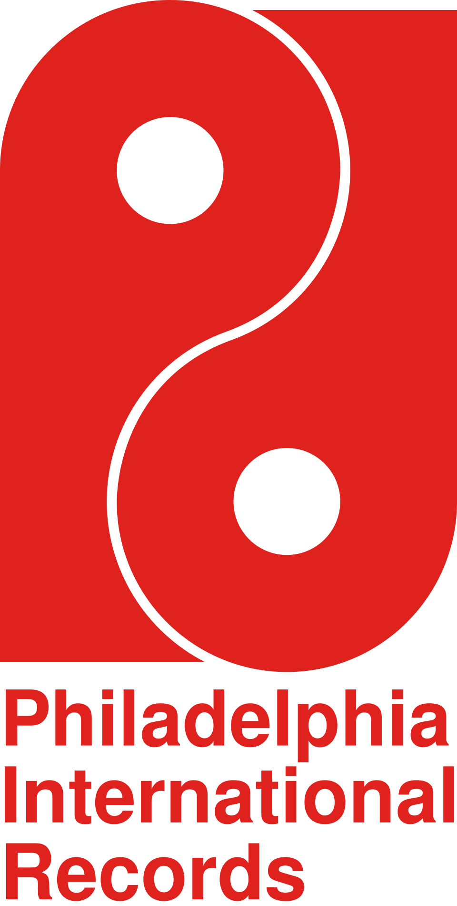

홈 > 브랜드 매거진 > Philadelphia International Records
Philadelphia International Records
필라델피아 인터내셔널 레코드(Philadelphia International Records)는 1971년 케네스 갬블과 리언 허프가 미국 필라델피아에서 설립한 소울·R&B 레이블이다. '필리 소울' 사운드를 대표하며 디 오제이스 등을 배출했다.
산업 분야 미디어·엔터테인먼트 · 공개 등급 디렉토리 · 브랜드 평가 3.2 ★

한눈에 보는 브랜드
필라델피아 인터내셔널 레코드(Philadelphia International Records)는 1971년 케네스 갬블과 리언 허프가 미국 필라델피아에서 설립한 소울·R&B 레이블이다. '필리 소울' 사운드를 대표하며 디 오제이스 등을 배출했다.
브랜드 관점
필라델피아 인터내셔널 레코드는 '필리 소울'을 정의한 1970년대 소울·R&B의 대표 레이블이다. 설립·운영 주체, 주력 장르, 대표 아티스트를 함께 보면 미디어·엔터테인먼트 안에서의 위치가 또렷해진다.
시작과 성장
1971년 케네스 갬블과 리언 허프가 필라델피아에서 설립했다. 풍성한 오케스트레이션의 '필리 소울'로 디 오제이스, 빌리 폴 등을 배출했으며 카탈로그는 현재 소니 뮤직(레거시)이 관리한다.
브랜드 아이덴티티
Philadelphia International Records의 아이덴티티는 브랜드명, 로고 사용 여부, 업종 언어, 국가적 배경을 중심으로 정리됩니다. 공개 로고 자산은 추후 권리 확인 후 보강할 수 있도록 텍스트 메타데이터 중심으로 관리합니다.
확장 지식
'필리 소울'을 대표했으며 카탈로그는 현재 소니 뮤직(레거시)이 관리한다.
제품과 서비스
소울·R&B 음반을 발매했다. 디 오제이스 'Love Train', 빌리 폴 'Me and Mrs.
Jones' 등이 대표적이다.
사람들
케네스 갬블과 리언 허프가 1971년 설립했다.
현재 상태
타임라인
정리된 연도형 이벤트가 없습니다.
BI/CI 변천사
함께 읽을 브랜드
In
International DeeJay Gigolo Records
미디어·엔터테인먼트 · 디렉토리International DeeJay Gigolo Records인터내셔널 디제이 지골로 레코드(International DeeJay Gigolo Records)는 1996년 DJ 헬이 독일 뮌헨에서 설립한 일렉트로닉 레이블이다....
RS
롤링 스톤스 레코드
미디어·엔터테인먼트 · 디렉토리롤링 스톤스 레코드롤링 스톤스 레코드(Rolling Stones Records)는 1970년 롤링 스톤스가 세운 음반 레이블이다. 'Sticky Fingers' 등 밴드의 1970~8...
 미디어·엔터테인먼트 · 디렉토리워프 레코즈
미디어·엔터테인먼트 · 디렉토리워프 레코즈워프 레코드(Warp Records)는 1989년 스티브 베킷 등이 영국 셰필드에서 설립한 일렉트로닉·실험음악 레이블이다. 에이펙스 트윈·오테커 등을 배출한 IDM의...
En
Enja Records
미디어·엔터테인먼트 · 디렉토리Enja Records엔야 레코드(Enja Records)는 1971년 마티아스 빙켈만과 호르스트 베버가 독일 뮌헨에서 설립한 재즈 레이블이다. 'European New Jazz'에서 이...
RA
RAK
미디어·엔터테인먼트 · 디렉토리RAKRAK 레코드(RAK Records)는 1969년 프로듀서 미키 모스트가 영국 런던에서 세운 팝 음반 레이블이다. 1970년대 영국 팝 히트를 다수 배출했으며 카탈로...
Sp
Specialty
미디어·엔터테인먼트 · 디렉토리Specialty스페셜티 레코드(Specialty Records)는 아트 루프가 1940년대 미국 로스앤젤레스에서 설립한 R&B·가스펠 레이블이다. 리틀 리처드를 배출한 초기 로큰롤...
NR
니트로 레코드
미디어·엔터테인먼트 · 디렉토리니트로 레코드니트로 레코드(Nitro Records)는 1994년 디 오프스프링의 덱스터 홀랜드 등이 미국에서 설립한 펑크 레이블이다. AFI 등을 배출했으나 2000년대 후반...
 미디어·엔터테인먼트 · 디렉토리애플 레코드
미디어·엔터테인먼트 · 디렉토리애플 레코드애플 레코드(Apple Records)는 1968년 비틀즈가 설립한 영국의 음반 레이블이다. 애플 코어(Apple Corps) 산하 레이블로 비틀즈의 음반과 메리 홉...